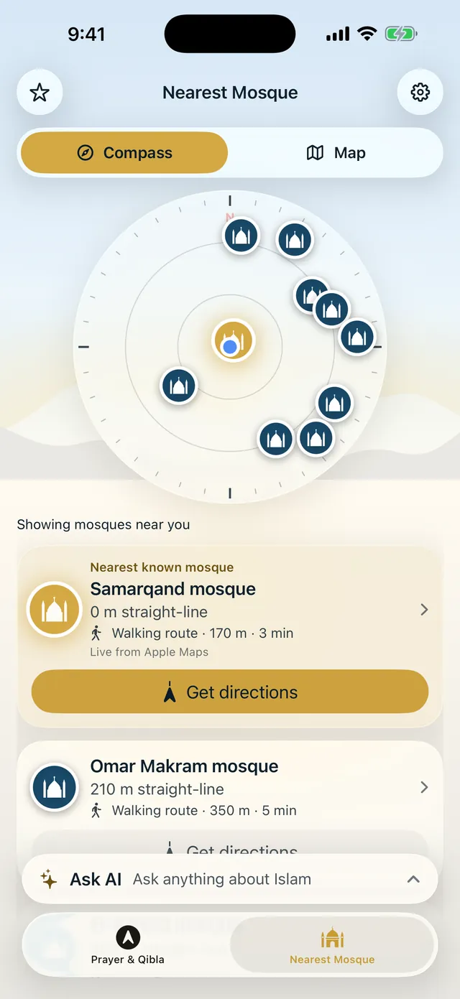
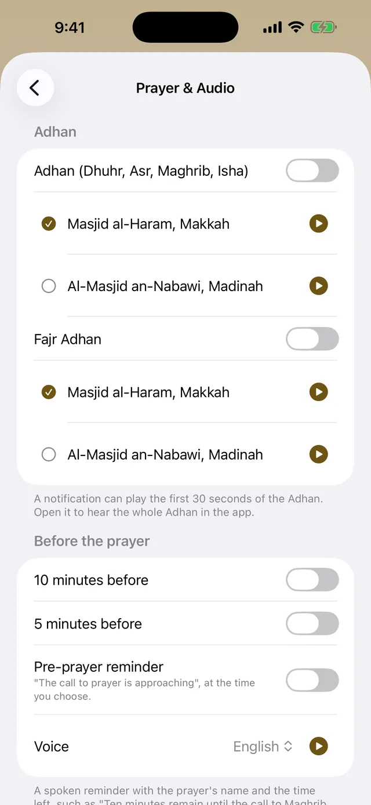

See which way the mosque is, and how far.
A compass with each mosque at its real direction, and a map for the walk there.
Today
Qibla from Baku
207° from north · 2,314 km to the Kaaba
Times for the centre of Baku, Muslim World League method. The app works them out for exactly where you are, and you can choose the method your mosque follows.


A compass with each mosque at its real direction, and a map for the walk there.

With a reminder before each prayer, a Fajr alarm and Friday reminders.

Answers quote the books on your phone, each with its source. They are not a fatwa.
Near Mosque
No account, no ads, no tracking. Prayer times and the Qibla work without the internet.